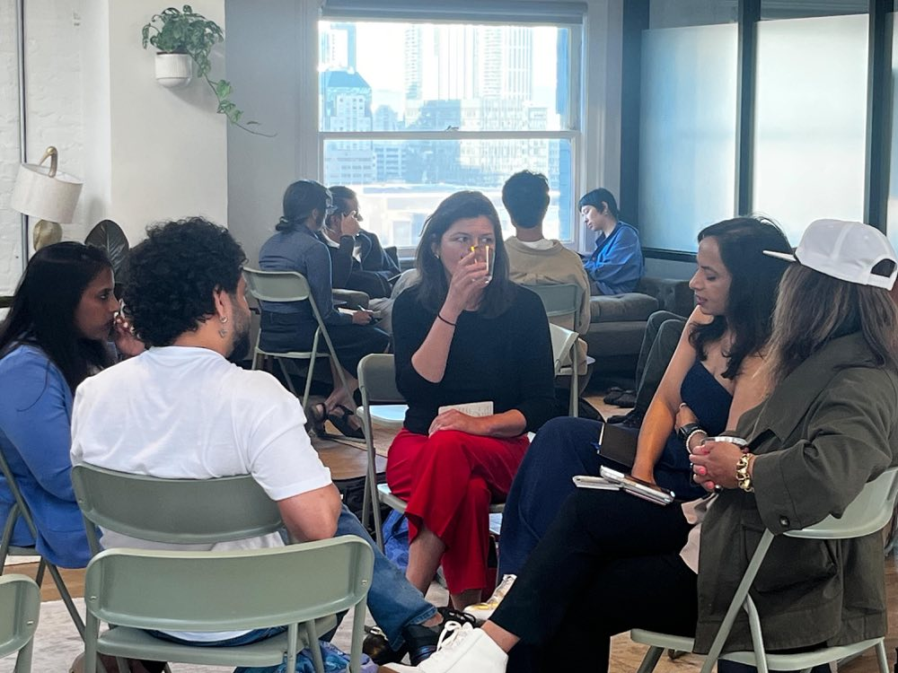
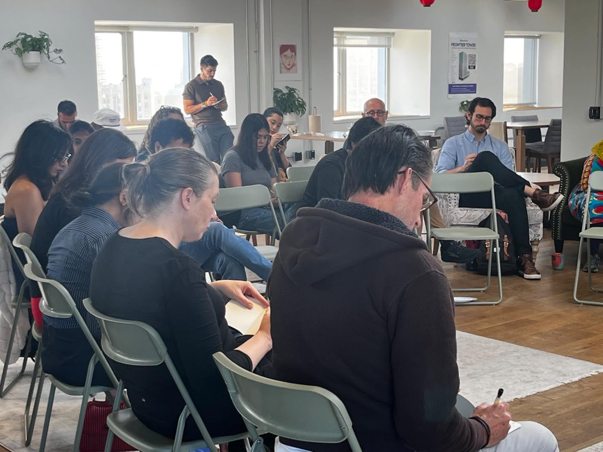
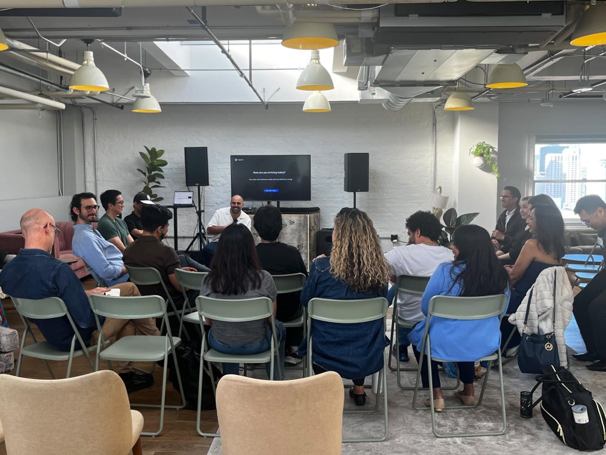

Community proof
This is not a course you watch alone.



A community for leaders navigating rapid change · San Francisco
Work is changing faster than people can process it — roles, teams, whole organizations. We help people and organizations lead that change instead of absorbing it.
Events · Group coaching cohort · 1:1 coaching · Team programs

What we do
For you — or your whole team.
Free monthly gatherings in San Francisco and online. The easiest first step.
Attend an event →Group coaching for leading through change. Small group, one month.
Join the cohort →Executive coaching for founders and leaders — plus The Inner Board group.
Book a call →Team-level AI adoption and the redesign of real work.
Book an org call →Why now
AI agents are becoming coworkers. Entire technology stacks are being rebuilt. The number of decisions — and the amount of communication needed to hold an organization together — is multiplying, fast.
Most companies are responding with more tools and more training. But you can't mandate your way into a change this personal. Adoption is different for every individual, moving too fast for any fixed curriculum — and it carries real fear, grief, and uncertainty that top-down rollouts don't make room for.
This isn't only a technology shift. It's a human one.
That's the gap InsightsOut exists to close.
Our point of view
It is changing our roles, relationships, organizations, and sense of value. That transition isn't only technical — it's emotional, ethical, and collective. InsightsOut helps people and organizations navigate it from the inside out.
In plain terms
What we build
Change efforts don't fail on technology. They fail on the human side. Everything we do builds these five capacities:
Understand what's changing and what it means — for your organization, your team, and you.
Space to process fear, uncertainty, grief, resistance — and possibility. They're part of the transition, not obstacles to it.
People owning their own learning and redesigning their own work — not waiting for a plan.
Try new ways of working in your actual workflows, see what happens, share what works.
Boundaries, accountability, and clear decisions about what should stay human — made as you go, not after.
The cohort
One month of group coaching with peers navigating the same shift — sensemaking, honest conversation, and steadier leadership. Guided by Nima.
Join the CohortYou leave with:
Community proof


Why this exists
Nima Imani has spent a career at the intersection of technical change and human change: a decade in engineering and digital transformation, then ICF-certified ontological coaching. InsightsOut brings both together — because AI adoption was never just a tooling problem.
Read the full story